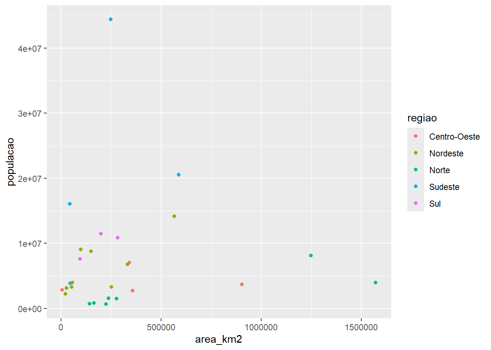
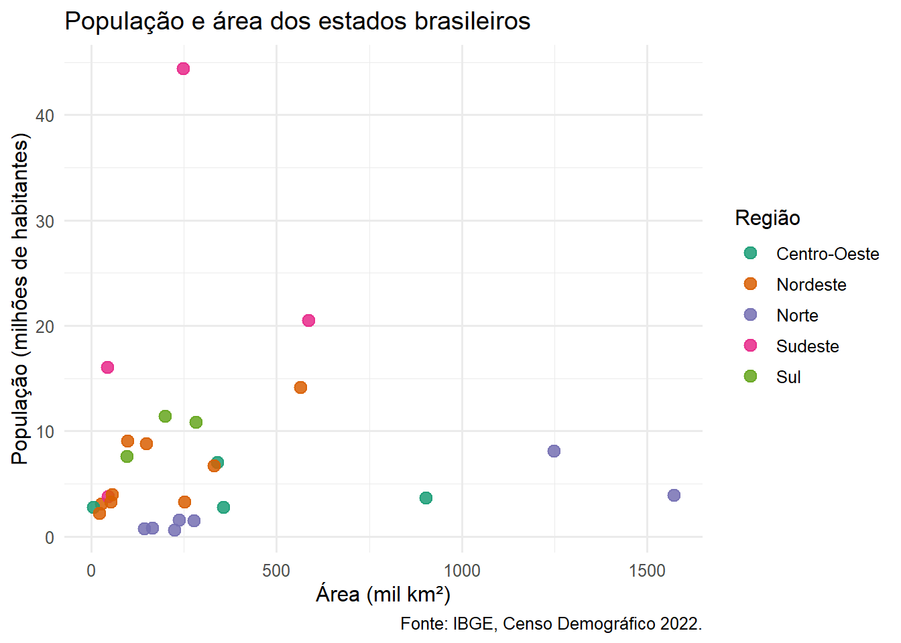

YAML, Markdown, código, tabelas, figuras e referências em um relatório claro.
Visão geral
Um relatório reprodutível também precisa ser compreensível. Nesta aula, vamos organizar o documento, controlar sua aparência e apresentar evidências com tabelas e gráficos que tenham função narrativa — usando a mesma base de estados brasileiros da Aula 1.
Objetivos de aprendizagem
configurar título, autoria, formato e sumário no YAML;
estruturar texto com Markdown e hierarquia de seções;
controlar código e resultados com opções de execução;
inserir tabelas, figuras, equações e referências cruzadas;
aplicar princípios básicos de legibilidade e acessibilidade.
1. Planeje antes de formatar
Antes de escolher cores e fontes, responda:
Qual pergunta o documento responde?
Quem tomará uma decisão ou aprenderá com ele?
Quais evidências sustentam a mensagem principal?
Qual formato e nível de detalhe esse público precisa?
O plano molda até a frase de abertura. Compare:
Evite — descreve o processo, não a conclusão:
“Neste relatório, foram coletados dados do IBGE sobre população e área dos estados brasileiros, que em seguida foram processados e utilizados para gerar uma tabela e um gráfico apresentados a seguir.”
Prefira — abre com a mensagem, o método vem depois:
“A densidade demográfica brasileira é extremamente desigual: o Distrito Federal tem mais de 480 habitantes por km², enquanto sete estados da região Norte têm menos de 7.”
A primeira versão exige que quem lê chegue ao gráfico para descobrir se há algo relevante. A segunda entrega a conclusão de imediato — a tabela e o gráfico existem para sustentar essa frase, não para substituí-la.
Uma estrutura simples funciona para muitos relatórios:
Título e resumo executivo
├── Contexto e objetivo
├── Dados e método
├── Resultados
├── Conclusões e recomendações
└── Referências ou apêndice
2. Cabeçalho YAML
O YAML configura o documento. A indentação usa espaços e define hierarquia:
---title:"Indicadores por estado"subtitle:"Perfil demográfico e econômico das unidades federativas"author:"Nome da pessoa autora"date: todaylang: pt-BRformat:html:toc:truetoc-depth:2code-fold:trueexecute:echo:falsewarning:false---
format controla a saída; execute controla a computação. Se uma opção vale apenas para um bloco, declare-a no próprio bloco em vez de aplicá-la ao documento inteiro.
AvisoErro real de YAML
Um dos-pontos sem aspas dentro de um texto quebra o cabeçalho:
title: Indicadores: uma análise por estado
produz algo como:
ERROR: YAML parse exception at line 2, column 18: mapping values are not allowed in this context
A correção é envolver o texto inteiro em aspas: title: "Indicadores: uma análise por estado". Sempre que a renderização falhar antes de qualquer código rodar, o cabeçalho é o primeiro lugar a conferir.
3. Hierarquia e Markdown
## ResultadosO indicador apresentou **crescimento** no período.### Diferenças regionais- Região Sudeste: maior população absoluta;- Região Norte: menor densidade demográfica;- Região Nordeste: maior número de estados.
Use um único título principal, fornecido pelo YAML. Evite pular de ## para ####. Títulos devem descrever o conteúdo, e não apenas numerar “Parte 1”.
4. Preparando os dados desta aula
Todos os exemplos a seguir partem do mesmo .csv já usado na Aula 1:
Tabela 1: Estados, população total e densidade média, por região.
Região
Estados
População total
Densidade média (hab/km²)
Sudeste
4
84.840.113
166,1
Nordeste
9
54.637.621
61,8
Sul
3
29.937.706
58,6
Norte
7
17.355.778
4,9
Centro-Oeste
4
16.289.538
129,1
No texto, cite a Tabela 1 e interprete o padrão. Não repita em prosa todos os números da tabela — a região Sudeste concentra a maior população total mesmo tendo só quatro estados, o que já diz mais do que listar todas as células.
Para um relatório executivo, knitr::kable() costuma bastar. Quando o público precisa de uma tabela com título, nota de rodapé e formatação condicional, gt entrega mais controle:
Um gráfico feito às pressas atrapalha mais do que ajuda. Compare as duas versões abaixo — os dados são exatamente os mesmos:
Mostrar código
ggplot(populacao_uf, aes(area_km2, populacao, color = regiao)) +geom_point()

Figura 1: Evite: cores padrão sem propósito, sem rótulos de eixo e sem unidade.
Mostrar código
ggplot(populacao_uf, aes(area_km2 /1000, populacao /1e6, color = regiao)) +geom_point(size =3, alpha =0.85) +scale_color_brewer(palette ="Dark2") +labs(title ="População e área dos estados brasileiros",x ="Área (mil km²)",y ="População (milhões de habitantes)",color ="Região",caption ="Fonte: IBGE, Censo Demográfico 2022." ) +theme_minimal(base_size =12)

Figura 2: Prefira: título, eixos com unidade, paleta com poucas cores e leitura guiada.
A segunda versão não tem mais dados — tem menos ruído. theme_minimal() remove o fundo cinza padrão, scale_color_brewer() troca as cores automáticas por uma paleta pensada para diferenciação, e os eixos convertidos para mil km² e milhões de habitantes evitam números com muitos dígitos.
A Figura 2 permite comparar território, população e região ao mesmo tempo. A legenda explica o que está sendo mostrado; o parágrafo ao redor deve dizer por que isso importa — aqui, que tamanho territorial não é um bom previsor de população.
Para imagens externas (fotos, logotipos, diagramas):
{#fig-fluxo width=70%}
Use texto alternativo informativo — o fig-alt de Figura 2 descreve o padrão visto no gráfico, não apenas “gráfico de dispersão”. Quem usa leitor de tela depende inteiramente dessa frase para entender a figura.
7. Equações e referências cruzadas
A densidade demográfica usada nos exemplos acima é definida por:
\[
d = \frac{P}{A}
\tag{1}\]
em que \(P\) é a população e \(A\) é a área em km². A Equação 1 é a mesma conta feita pela coluna densidade_dem do arquivo dados/populacao_uf.csv. Rótulos seguem prefixos convencionais:
fig- para figuras;
tbl- para tabelas;
eq- para equações;
sec- para seções.
Rótulos estáveis permitem mudar a ordem dos elementos sem corrigir a numeração manualmente — o Quarto renumera tudo sozinho.
8. Estilo sem perder manutenção
Comece com um tema e poucas regras CSS:
format:html:theme: cosmocss: styles.css
body {line-height:1.6;}h1, h2, h3 {color:#2f4858;}
Prefira consistência a decoração: duas fontes, uma paleta pequena, espaçamento generoso e contraste adequado costumam ser suficientes. O mesmo princípio vale para gráficos — scale_color_brewer(palette = "Dark2") usado acima é uma paleta pronta, testada para diferenciação, em vez de escolher cores uma a uma.
Prática guiada
Usando dados/populacao_uf.csv:
Escreva um objetivo e um público explícitos no início da página.
Configure um YAML com sumário e código recolhível.
Calcule, com dplyr, o PIB per capita médio por região a partir de dados/pib_uf.csv (você vai aprender a juntar as duas tabelas na Aula 3 — por enquanto, pode ler pib_uf.csv separadamente e agrupar por região usando um left_join simples, ou deixar essa etapa como pergunta em aberto para a próxima aula).
Construa uma tabela gt com título e nota de fonte.
Construa um gráfico com título, eixos, legenda e texto alternativo — e, antes de finalizar, produza deliberadamente uma versão “ruim” (sem theme_minimal(), sem labs()) para comparar as duas.
Adicione referências cruzadas para a tabela e o gráfico.
Para o projeto final
Crie o esqueleto do documento, escreva a introdução e inclua ao menos uma evidência visual. Peça a alguém do público-alvo para dizer qual mensagem entendeu.